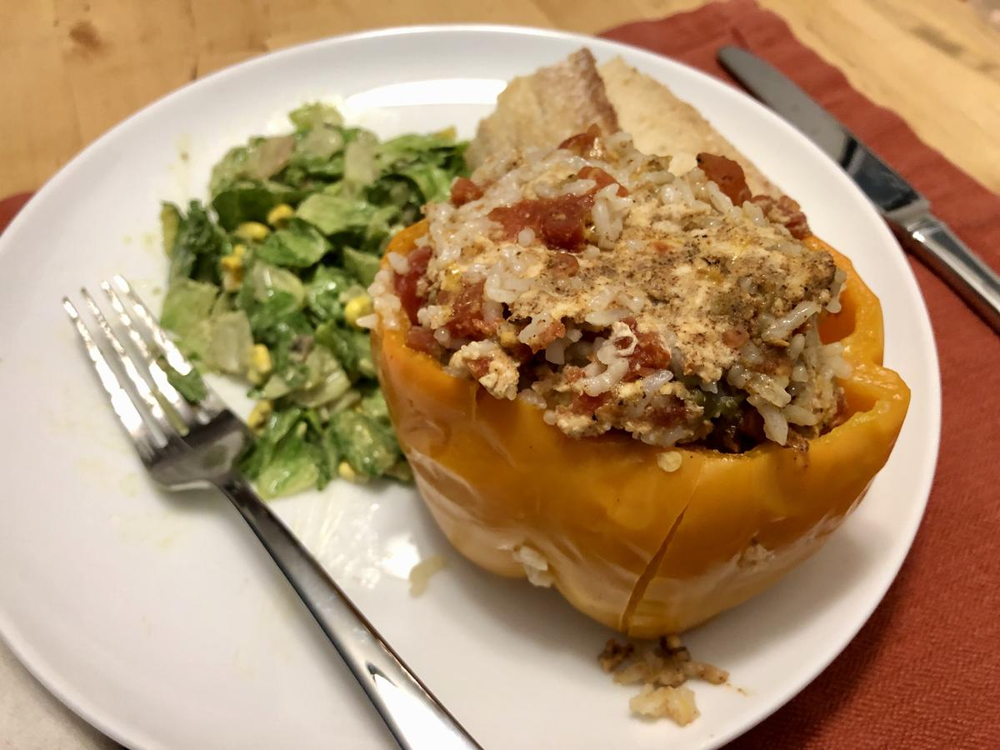

Based on https://www.wellplated.com/instant-pot-stuffed-peppers/ and ingredients from this Washington Post Recipe
Personal rating: 4 / 5

4 large bell peppers (any color)
(Optional) 1/2 lb ground turkey, ground chicken, or lean ground beef
1 can (15 oz) black beans (or Navy/Great Northern), rinsed
1 Tbsp ground chili powder
1 tsp ground cumin
1 tsp garlic powder
1 tsp onion powder
1/2 tsp kosher salt
1/4 tsp black pepper
1/4 tsp cayenne pepper (optional)
1 (10 oz) can Rotel diced tomatoes and green chiles (with juices)
1 (4 oz) can diced green chiles in their juices
1.5 cups cooked brown rice, quinoa, etc.
1.25 cup shredded cheese (Monterey Jack, pepper jack, sharp cheddar, or similar), divided in 3/4 and 1/2 cup
Cilantro, salsa, non-fat plain yogurt, or other toppings